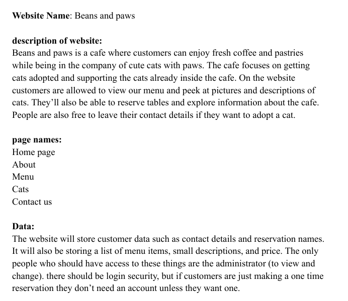
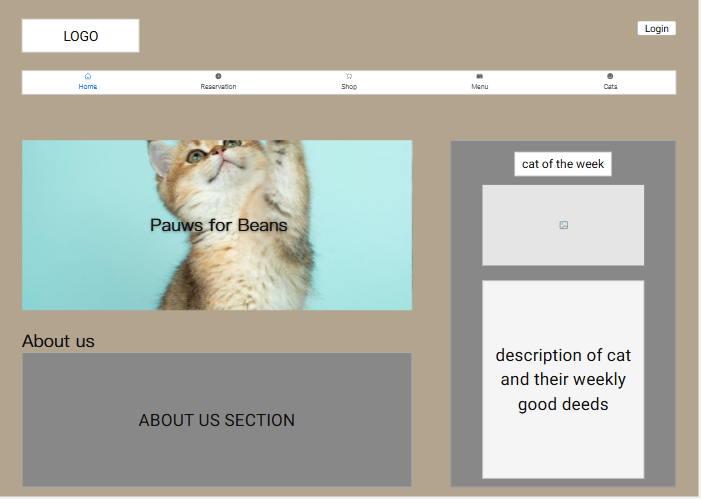
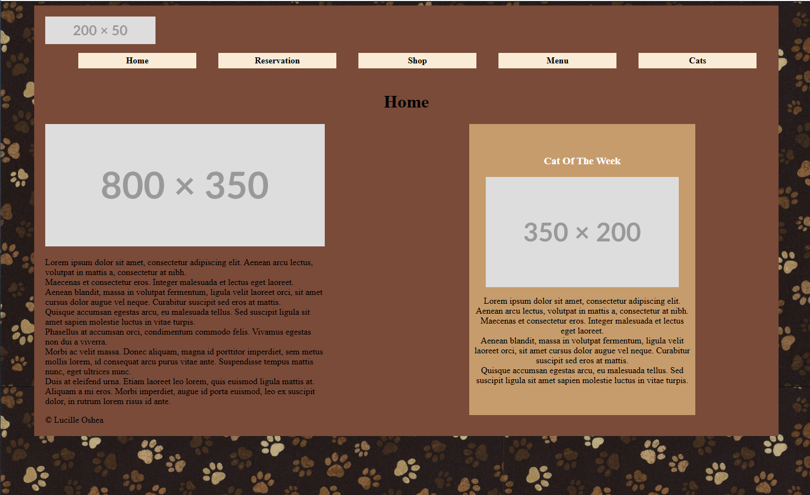
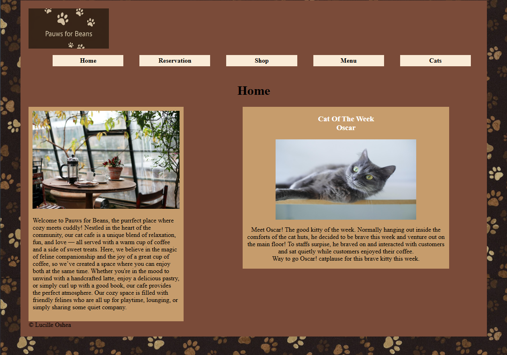
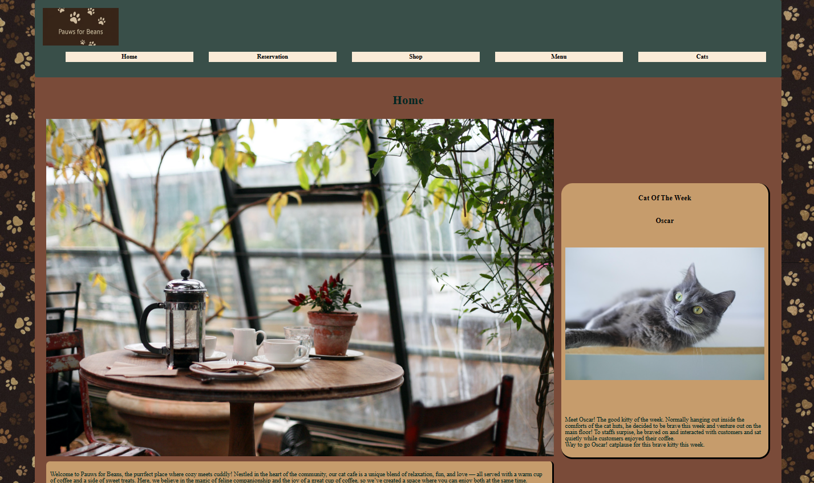

Project part 1: outline

Made a PDF to map out what our project website
might be. Includes different pages and goal of site.
Project part 2: wire frames
made wireframe of website
Project part 3: HTML and CSS

Made outline of my website following my
mockitt design.
Project part 4: Images and Color
Added images and text
Project part 5: improve website
Added more content to the page, such as events,differnt footers, and different header colors.